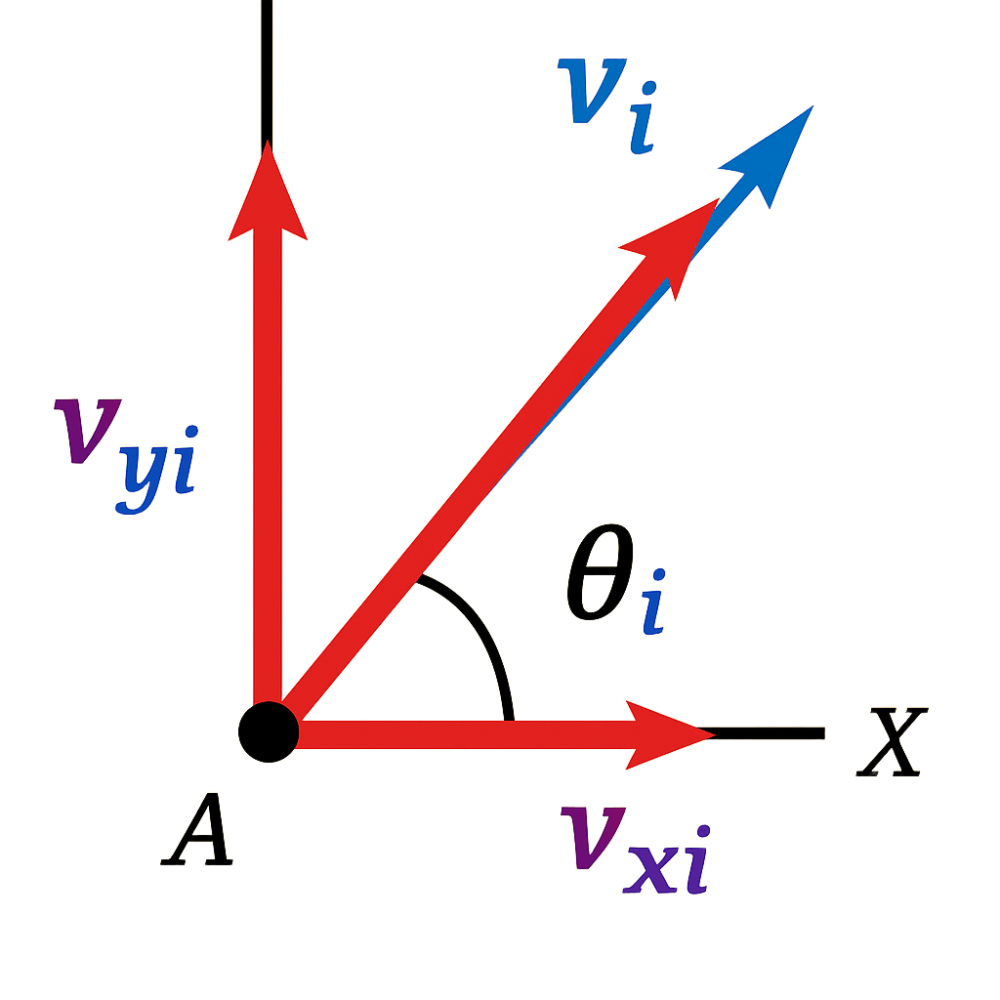

Gerak parabola adalah gerak dengan lintasan berbentuk parabola, yang terjadi sebab hasil perpadua dua gerakan lurus yaitu gerak lurus beraturan (GLB) pada sumbu horizontal (sumbu X) dan gerak lurus berubah beraturan (GLBB) pada sumbu vertical (sumbu y). Dengan membahas gerak parabola kita dapat berpeluang mempelajari kembali persamaan GLB dan GLBB sekaligus memprakekan dalam kehidupan sehari hari secara presisi dan tepat.
Pernahkah kalian menonton pertandingan bola basket? Gerakan yang terjadi ketika sang pemain basket melempar bola basket menuju ring pasti membentuk lintasan melengkung. Mengapa hal tersebut dapat terjaid? Coba kalian amati video dibawah ini
Apabila diamati sekilas, benda yang melakukan parabola selalu memiliki lintasan berbentuk kurva lengkungan dan seolah-olah kembali ke tanah ketika mencapai titik tertinggi. Mengapa demikian? Simak penjelasan berikut ini!
Analisis vektor posisi dan kecepatan
Coba kalian perhatikan animasi dibawah ini! Sebuah benda mula-mula berada di pusat koordinat, dilemparkan ke atas dengan kecepatan awal sebesar \(v_0\) dan sudut elevasi \(\theta\). Ternyata pada sumbu x, benda bergerak dengan kecepatan konstan atau perpindahan sama dengan 0
Sebab kecepatan konstan maka percepatan juga akan bernilai 0
Coba kita amati perubahan parabola bila ditinjau pada suatu titik
Untuk mengukur kecepatan pada saat posisi x kita dapat menuliskan
Oleh karena itu kecepatan pada saat posisi x adalah:
Substitusi persamaan (1) ke persamaan (4)
Sebab kecepatan merupakan perubahan posisi tergantung terhadap waktu, maka kita turunkan kedua variabel berdasarkan waktu
Untuk menyelesaikan persamaan (6) kita harus mengintegralkan kedua posisi sehingga persamaan (6) berubah menjadi
Jadi dalam gerak parabola kita dapat mengetahui posisi horizontal (x) dengan persamaan (7). Sedangkan untuk mencari waktu yang dibutuhkan ketika benda berada di suatu x dapat menggunakan:
Kemudian kalian analisis kembali video animasi tersebut ternyata pada saat sumbu y benda tersebut mengalami percepatan dan perlambatan. Hal ini terjadi sebab pada komponen y terdapat percepatan gravitasi yang mengarah kebawah, sehingga \(a \neq 0\), tetapi \(a = \pm g\) tergantung kondisi dipercepat atau diperlambat. Kita tahu bahwa percepatan adalah turunan kecepatan terhadap waktu
Sebab \(a = \pm g\) maka
Dan kita tahu bahwa percepatan timbul sebab perubahan kecepatan terhadap waktu, maka persamaan tersebut bisa kita setarakan menjadi
Selesaikan persamaan tersebut menggunakan integral
Atau kita tulis:
Sebab ketika \(t=0\) dan \(y=0\) maka \(C=0\), sehingga persamaan berubah:
Coba kita amati kembali perubahan parabola bila ditinjau pada suatu titik
Dari gambar tersebut untuk mencari kecepatan pada sumbu y vertical kita bisa tulis
Sehingga:
Substitusi ke persamaan:
Sebab \( v_y = \frac{dy}{dt} \) maka bisa kita tulis menjadi
Karena kecepatan adalah perubahan posisi terhadap waktu maka persamana 15 dapat kita tulis kembali menjadi
Kita selesaikan persamaan (18) menggunakan integral
Sehingga,
Pada saat \(t=0\), posisi y juga 0 maka \(C=0\), maka persamaan tersebut dapat ditulis kembali menjadi
Untuk mencari waktu pada saat posisi y kita tinjau grafik parabola. Ketika \(y_{max}\), maka \(v_{0y}=0\):
Sehingga:
| Besaran | Sumbu X (GLB) | Sumbu Y (GLBB) |
|---|---|---|
| Kecepatan awal (m/s) | \(v_{0x}=v_0\cos\theta\) | \(v_{0y}=v_0\sin\theta\) |
| Kecepatan tertentu (m/s) | \(v_{0x}=v_0\cos\theta\) | \(v_y=v_0\sin\theta\pm gt\) |
| Posisi (m) | \(x=v_0\cos\theta t\) | \(y=v_0\sin\theta t\pm \tfrac{1}{2}gt^2\) |
| Waktu (s) | \(t_x=\tfrac{x}{v_0\cos\theta}\) | \(t_y=\tfrac{v_0\sin\theta}{g}\) |